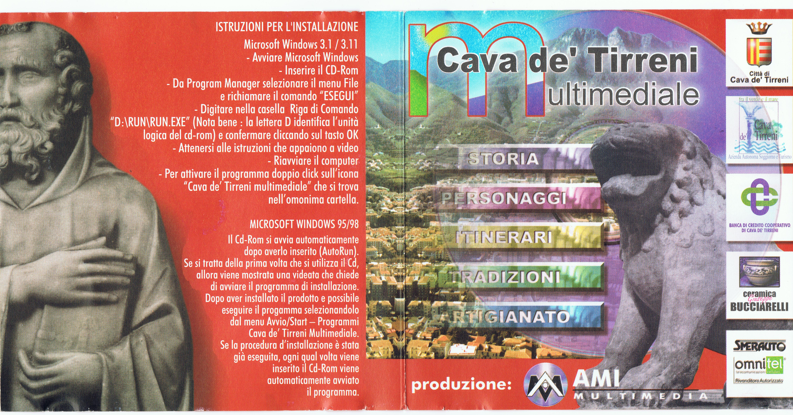
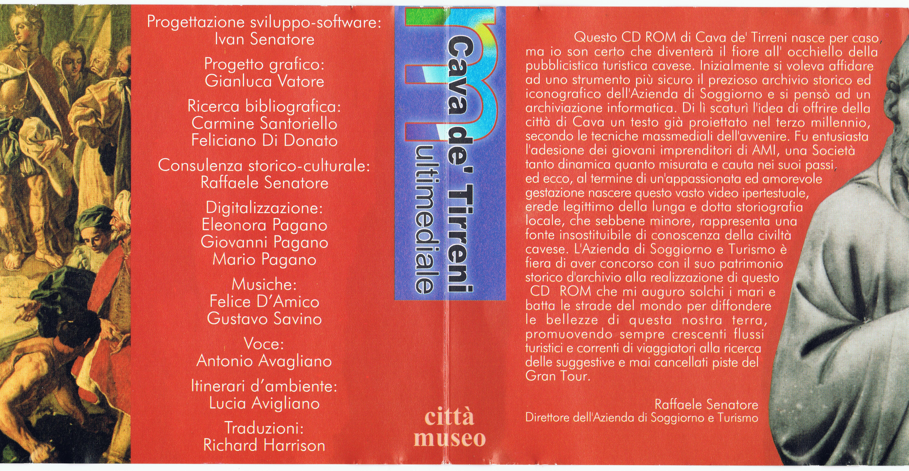

Info e crediti
Il progetto
Cava de’ Tirreni Multimediale nasce come esperimento per riportare in vita il CD-ROM realizzato da AMI Informatica per il Comune di Cava de’ Tirreni nel 1998: un viaggio nella storia, nei luoghi e nella cultura della città.
Il recupero è un progetto culturale indipendente, portato avanti per passione e senza scopo di lucro. L’obiettivo è conservare l’esperienza originale e renderla nuovamente accessibile, mantenendo un archivio online utile anche a future iniziative.
La presentazione della copertina originale
«Questo CD ROM di Cava de’ Tirreni nasce per caso ma io son certo che diventerà il fiore all’occhiello della pubblicistica turistica cavese. Inizialmente si voleva affidare ad uno strumento più sicuro il prezioso archivio storico ed iconografico dell’Azienda di Soggiorno e si pensò ad un archiviazione informatica. Di lì scaturì l’idea di offrire della città di Cava un testo già proiettato nel terzo millennio, secondo le tecniche massmediali dell’avvenire.
Fu entusiasta l’adesione dei giovani imprenditori di AMI, una Società tanto dinamica quanto misurata e cauta nei suoi passi, ed ecco, al termine di un’appassionata ed amorevole gestazione nascere questo vasto video ipertestuale, erede legittimo della lunga e dotta storiografia locale, che sebbene minore, rappresenta una fonte insostituibile di conoscenza della civiltà cavese.
L’Azienda di Soggiorno e Turismo è fiera di aver concorso con il suo patrimonio storico d’archivio alla realizzazione di questo CD ROM che mi auguro solchi i mari e batta le strade del mondo per diffondere le bellezze di questa nostra terra, promuovendo sempre crescenti flussi turistici e correnti di viaggiatori alla ricerca delle suggestive e mai cancellate piste del Gran Tour.»
Dalla versione React all’emulazione
La prima versione web recuperava dal CD il materiale multimediale e ricostruiva da zero struttura, animazioni, funzionalità e aspetto dell’applicazione con React, TypeScript, HTML e CSS.
Quella riscrittura è ora archiviata e non più mantenuta. Resta disponibile come testimonianza della prima fase del progetto: puoi visitare la versione React e consultare il suo codice sorgente.
Oggi le tecnologie del browser permettono di emulare un intero computer. La nuova versione esegue Windows 98 e il software originale del CD, per conservarne interfaccia, navigazione, animazioni e suoni.
Il codice del progetto attuale è su GitHub. Per suggerimenti, collaborazioni o maggiori informazioni, puoi contattarmi attraverso RoncaSpot.
Il CD originale
Cava de’ Tirreni Multimediale fu ideato e sviluppato da AMI Informatica nel 1998. Questo recupero non ufficiale ne conserva il software e il patrimonio multimediale.
- Guarda il video dimostrativo del software originale (senza audio).
- Scarica l’immagine ISO del CD originale.
Per l’installazione su un computer, la precedente guida del progetto indicava Windows 95, Windows 98 o Windows XP, con lo schermo impostato a 16 bit di colore. La versione per il browser si avvia direttamente nel browser con il pulsante «Avvia il CD».
La confezione


Come esplorare il CD
Come si torna indietro o al menu?
Porta il puntatore nella parte inferiore della finestra dell’applicazione: comparirà il menu con i pulsanti «Indietro» e «Menu».
Perché lo schermo è così piccolo?
Il programma conserva la risoluzione originale di 640 × 480 pixel. Puoi usare il pulsante «Schermo intero» per ingrandire la visualizzazione.
Crediti e diritti
Recupero e progetto web
A cura di Giuseppe Ronca · RoncaSpot.
Autori del CD originale
Le attribuzioni che seguono sono tratte dai titoli del CD.
- Progettazione e sviluppo software
- Ivan Senatore
- Progetto grafico
- Gianluca Vatore
- Ricerca bibliografica
- Carmine Santoriello
Feliciano Di Donato - Consulenza storico-culturale
- Raffaele Senatore
- Digitalizzazione
- Eleonora Pagano
Giovanni Pagano
Mario Pagano - Musiche
- Felice D’Amico
Gustavo Savino - Voce
- Antonio Avagliano
- Itinerari d’ambiente
- Lucia Avigliano
- Traduzione
- Richard Harrison
- Archivio fotografico
- A.A.S.T. Cava de’ Tirreni
New Art Photo
Alfonso Santoriello - Archivio video
-
- «Il Giuoco dei Colombi», di Domenico Meccoli, 1948.
- «Un paese, una Badia», di Mariza Warren, 1978.
- «La Pergamena Bianca», di Mariza Warren, 1979.
- «La Festa di Montecastello», Ente Montecastello ONLUS, 1990.
- Ringraziamenti originali
- Alfonso Galdi, Giuseppe Apicella, Ivo Avagliano, Annabella Angrisani, Raffaella Ambruosi, Giovanni Pagano, Full Motion, Gerardo Ardito, Paola Giordano, Salvatore Milano, Antonio De Caro, Alessandro Ingenito, Marco Senatore, Angelo Siani, il personale dell’A.A.S.T., il personale della Biblioteca Comunale, CAI · Sez. Cava de’ Tirreni e Parco Naturale Regionale «Diecimare».
«Cava de’ Tirreni Multimediale» © 1998 AMI Informatica S.a.s.
Tecnologie e licenze
L’emulazione nel browser è resa possibile da v86. Il sistema operativo emulato è Microsoft Windows 98; i driver VMDisp9x e VBMouse supportano rispettivamente la visualizzazione e il puntatore.
Il CD e i suoi contenuti, Windows e i componenti dell’emulatore mantengono i rispettivi diritti e le proprie licenze. Il credito per il recupero web riguarda il lavoro di conservazione e accesso al progetto.
Consulta le attribuzioni, le licenze e i sorgenti dei componenti dell’emulatore.